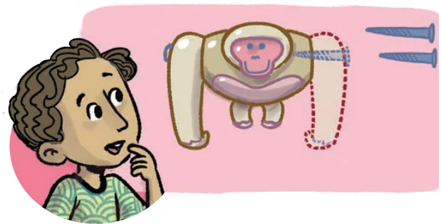
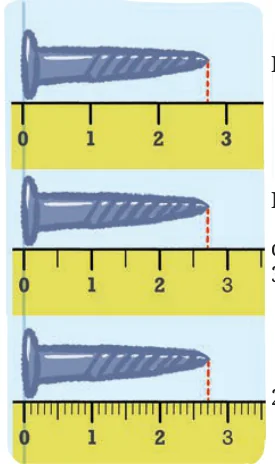
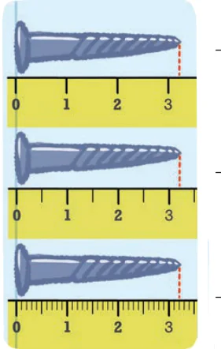
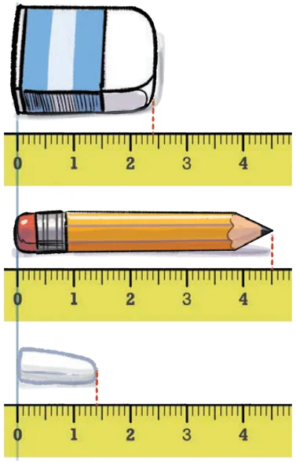

Sonu’s mother was fixing a toy. She was trying to join two pieces with the help of a screw. Sonu was watching his mother with great curiosity. His mother was unable to join the pieces. Sonu asked why. His mother said that the screw was not of the right size. She brought another screw from the box and was able to fix the toy. The two screws looked the same to Sonu. But when he observed them closely, he saw they were of slightly different lengths. Sonu was fascinated by how such a small difference in lengths could matter so much. He was curious to know the difference in lengths. He was also curious to know how little the difference was because the screws looked nearly the same. In the following figure, screws are placed above a scale. Measure them and write their length in the space provided.



Between 2 cm and 3 cm ____
More than \(2\frac{1}{2}\) cm but less than 3 cm ____
\(2\frac{7}{10}\) cm ____
Which scale helped you measure the length of the screws accurately? Why?
What is the meaning of \(2\frac{7}{10}\) cm (the length of the first screw)?
As seen on the ruler, the unit length between two consecutive numbers is divided into 10 equal parts. To get the length \(2\frac{7}{10}\) cm, we go from 0 to 2 and then take seven parts of \(\frac{1}{10}\). The length of the screw is 2 cm and \(\frac{7}{10}\) cm. Similarly, we can make sense of the length \(3\frac{2}{10}\) cm.
We read \(2\frac{7}{10}\) cm as two and seven-tenth centimeters, and \(3\frac{2}{10}\) cm as three and two-tenth centimeters.
Can you explain why the unit was divided into smaller parts to measure the screws?
Measure the following objects using a scale and write their measurements in centimeters (as shown earlier for the lengths of the screws): pen, sharpener, and any other object of your choice.
Write the measurements of the objects shown in the picture:

As seen here, when exact measures are required we can make use of smaller units of measurement.